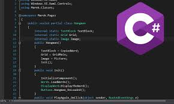
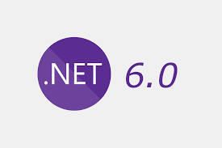
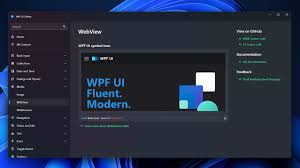
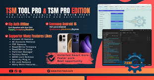

1. C# Programming

C# is the primary programming language for Windows applications. Key Features: • Object-oriented programming (OOP) • Strong type system • Event-driven programming • Integration with .NET libraries C# allows developers to create robust, scalable, and maintainable applications.
2. .NET Framework / .NET 6+

.NET provides the runtime environment and libraries required to build Windows apps. Benefits: • Cross-platform support (Windows, macOS, Linux) • Rich UI libraries for WPF and WinForms • Integrated security and networking features • Rapid application development
3. WPF UI Design

Windows Presentation Foundation (WPF) is used to design modern desktop interfaces. Features: • XAML for UI layout • Data binding for dynamic content • Styles, templates, and animations • MVVM architecture support WPF enables rich and interactive applications with modern UI/UX.
4. ADB Integration
ADB (Android Debug Bridge) allows desktop applications to communicate with mobile devices. Uses: • Automate device actions • Flash firmware or apps • Read device information Integrating ADB in Windows tools helps developers create mobile servicing applications.
5. Mobile Servicing Tools

Desktop apps can be designed to assist mobile technicians: • Remove FRP locks • Repair IMEI • Unlock screen or KG/MDM locks • Manage backups and restores Combining WPF + C# + ADB makes professional servicing tools.
6. Software Licensing System

Professional apps require license management to prevent piracy: • License key validation • User activation tracking • Subscription management Developers integrate licensing systems to secure apps and track users.